DFU NPC-Kunst · Arbeitsstand vom 28. Oktober 2026
Das Gesamtziel ist offen. Hier liegen erzeugte und unterschiedlich weit geprüfte Kandidaten. Keine pauschale visuelle Freigabe, Nutzerabnahme oder spielinterne Integration. GIFs dienen der manuellen Sichtprüfung.
Auftrag und Arbeitsaufteilung Quelleninventar Quellenprüfung Abdeckung pro Quelle und Aktion 436 providerqualifizierte Quelldatensätze, darunter 17 ausgeschlossene Editor-Markierungen. 21 Mods aktiviert. Die Quellenzahl ist keine Anzahl fertig animierter NPCs.
Portrait 236 · vollständiger Kandidat 54 eigene Augenstates plus54 bereits exakt abgeleitete220-Mundstates.108 Teile und2.916 Kombinationen außerhalb der Masken geprüft. C/E und G/FV bleiben begrenzt; keine Stimme oder zeitliche Freigabe.
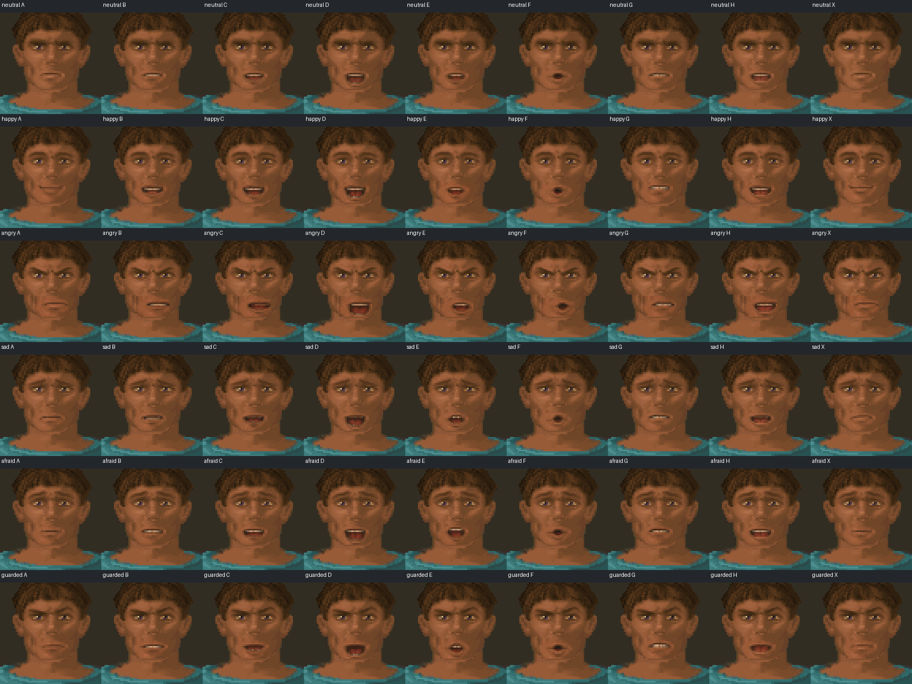
Dateien und Prüfdaten Portrait 236 · 54 Augenstates Reframing der3×3-Rohblätter erkannt und verworfen. Einzelbilder liefern Lid und Blickrichtungen; HALF bewahrt Iriszeile22. Eigene Brauen pro Stimmung, geteilter Lid-/Blickbereich desselben Gesichts. Kontrast und Ausdrucksvariation bleiben Grenzen.
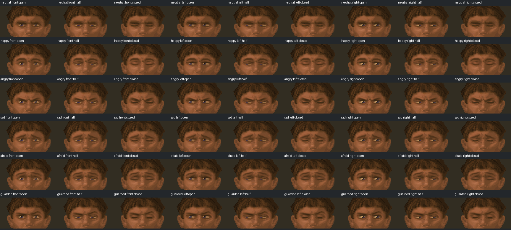
Dateien und Prüfdaten Portrait 047 · vollständiger Kandidat 54 eigene Augenstates und 54 exakt abgeleitete Mundstates. HALF behält Iriszeile27, Goldrand bleibt fest. Seitliche Augen heller; Phonemwirkung und individuelle Stimme offen.
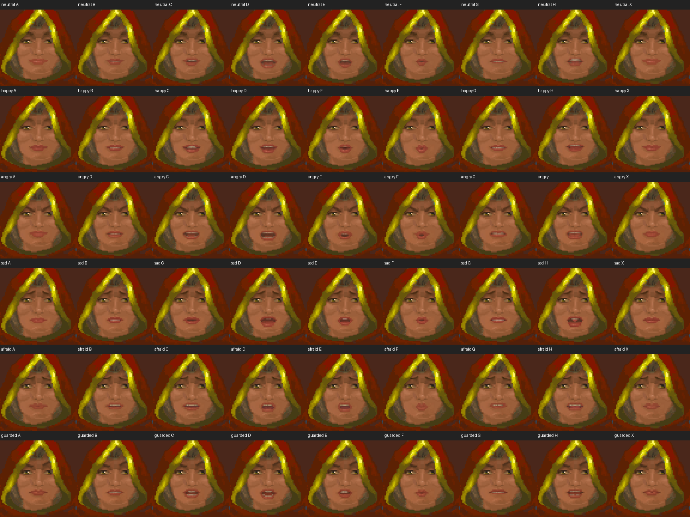
Dateien und Prüfdaten Portrait 047 · 54 Augenstates Alle Zustände statisch gesehen. HALF teilweise nahe CLOSED; keine zeitliche Freigabe.
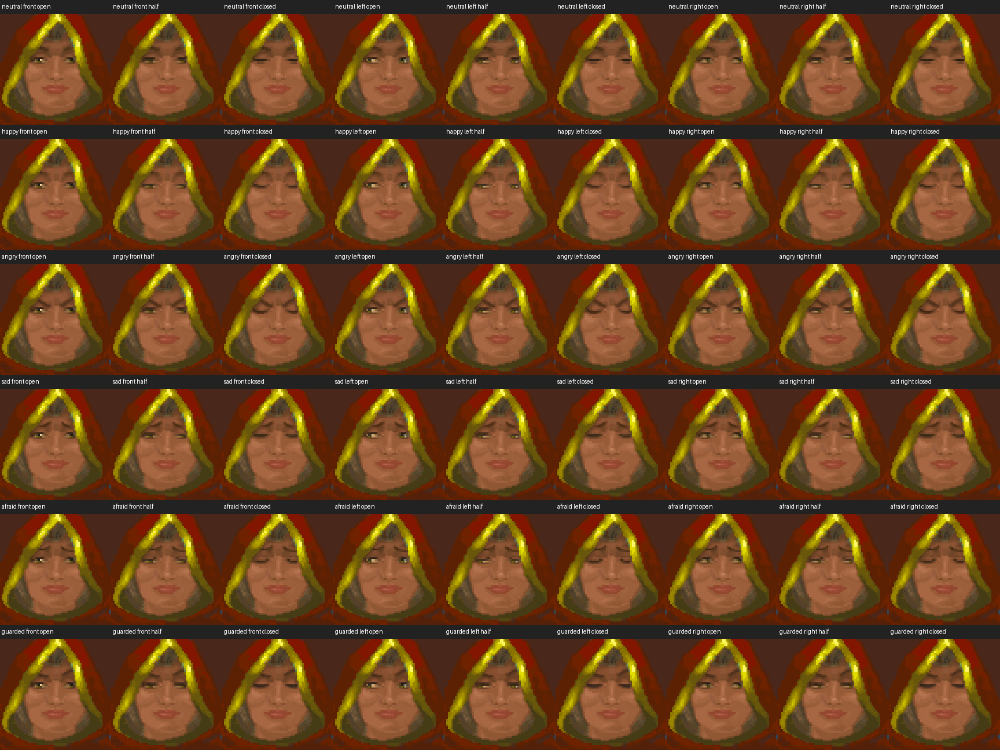
Dateien und Prüfdaten Portrait 046 · 54 Augenstates Ein sichtbares Auge animiert; verdeckte Gegenseite bleibt original. 108 Teile insgesamt vorhanden. Schmale HALF-Öffnung und zurückhaltende Ausdrücke bleiben Grenzen.
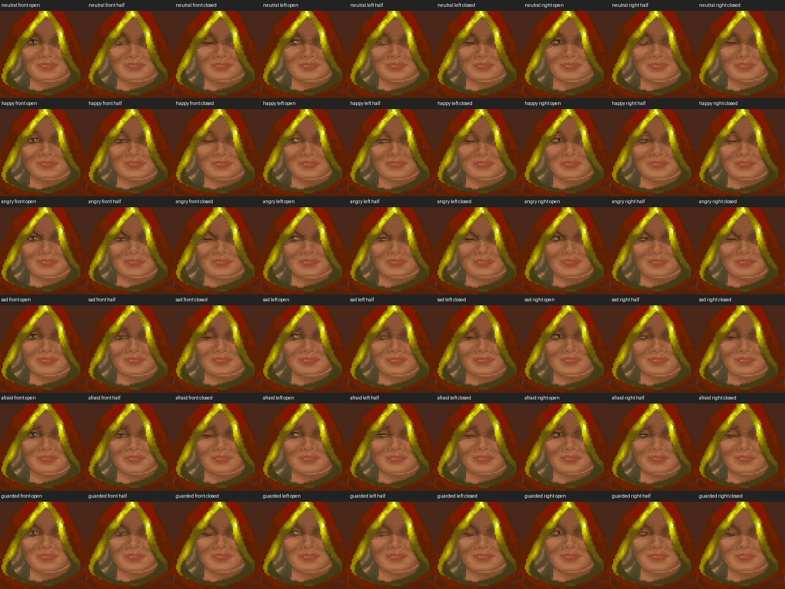
Dateien und Prüfdaten Portrait 236 · exakt übernommene Münder Fünf weitere Quellen erhalten je54 Mundstates von220. Tatsächliche Änderungsmaske samt1px-Rand exakt kompatibel. Keine neu generierten Posen; eigene Augen werden separat erzeugt.
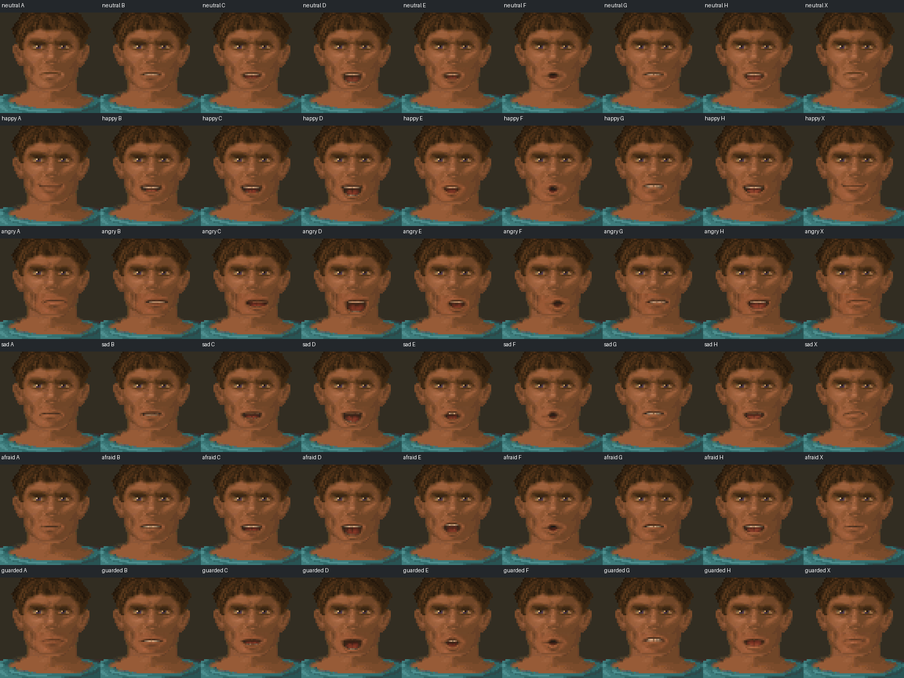
Dateien und Prüfdaten Nahkampf · 392 · korrigierte Haube Blaue native Haube in allen acht Ansichten wiederhergestellt.32 statisch geprüfte Phasen; Haar-, Stoff- und Größenvariation bleiben.
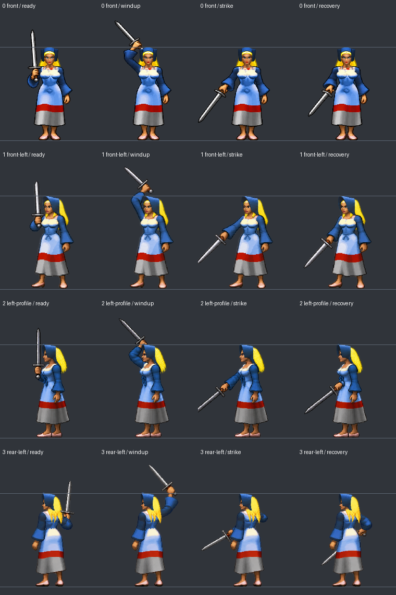
Dateien und Prüfdaten Rennen · 395 · Perspektiven 0–3 32 Phasen mit20 erzeugten Ansichten und12 nativen Spiegelableitungen. Weißer Umhang mitroten Streifen und offene Seiten quellengeprüft; Detaildrift bleibt.
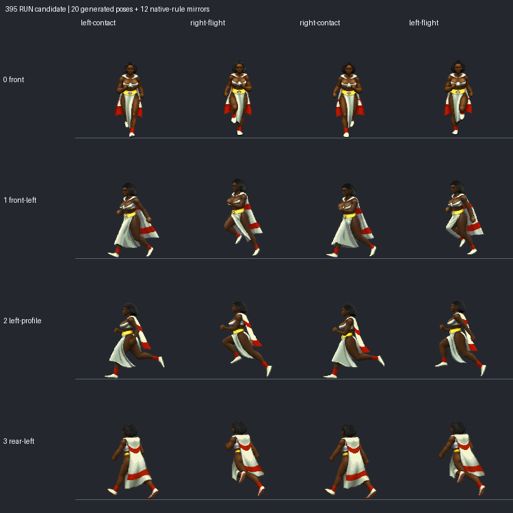
Dateien und Prüfdaten Portrait 012 · eigene Augen, exakte Mundübernahme 108 Teile vorhanden: 54 eigene Augenstates und 54 bereits exakt abgeleitete Mundstates. Kapuze und Gesicht bleiben außerhalb der Masken unverändert. Zeitliche Wirkung und individuelle Stimme offen.
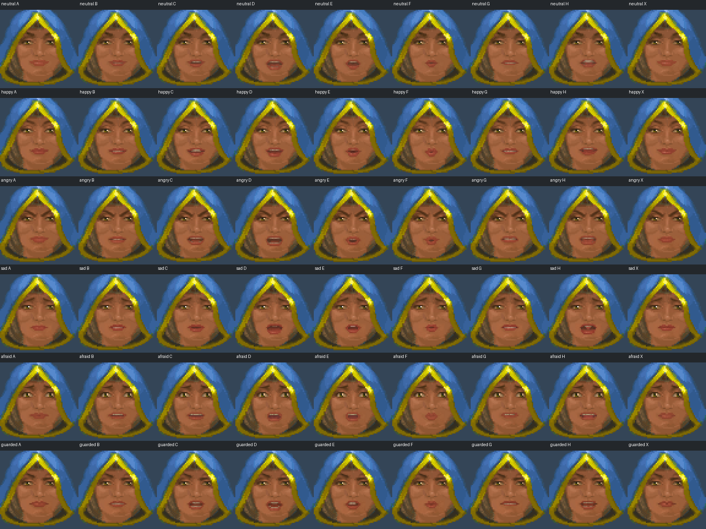
Dateien und Prüfdaten Portrait 012 · 54 Augenstates HALF bewahrt die passende OPEN-Iris auf Zeile 27; Unterlid ab Zeile 28 bleibt fest. Seitliche Augen zeigen hellere Sklera und andere Glanzdetails. Statisch geprüft, keine zeitliche Freigabe.
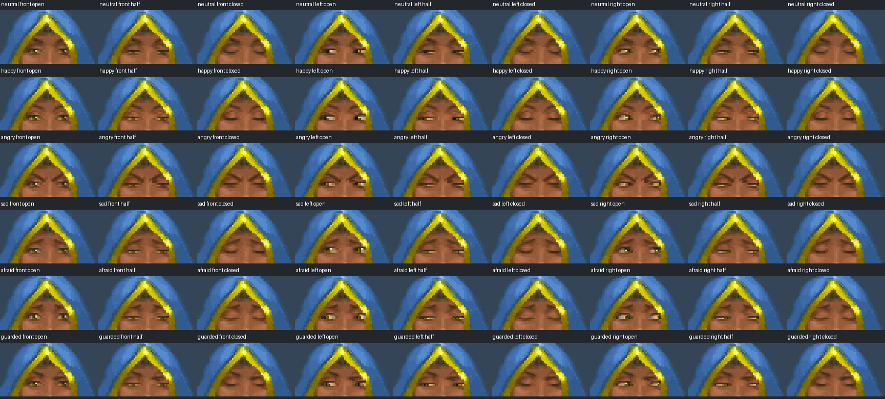
Dateien und Prüfdaten Portrait 220 · vollständiger Kandidat 54 eigene Münder ergänzen die vorhandenen exakt abgeleiteten Augen. Eigene E-Rundkontur erhalten. C/E bleiben subtil; G/FV-Kontakt begrenzt.
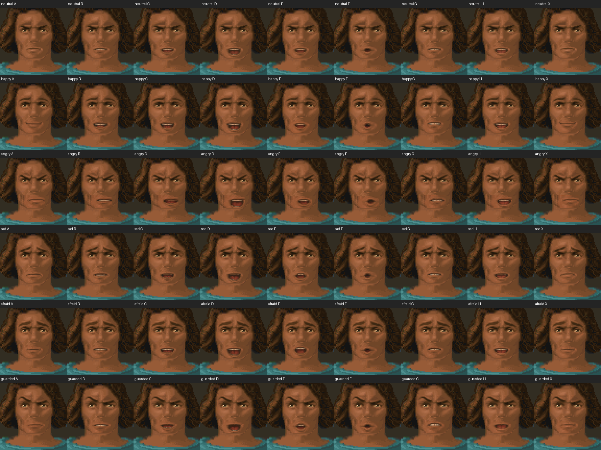
Dateien und Prüfdaten Portrait 425 · vollständiger Kandidat 54 eigene Münder ergänzen die vorhandenen Augen. Guarded-Framing korrigiert. E teils hoch, G/FV und Ausdrucksunterschiede begrenzt; individuelle Stimme fehlt.
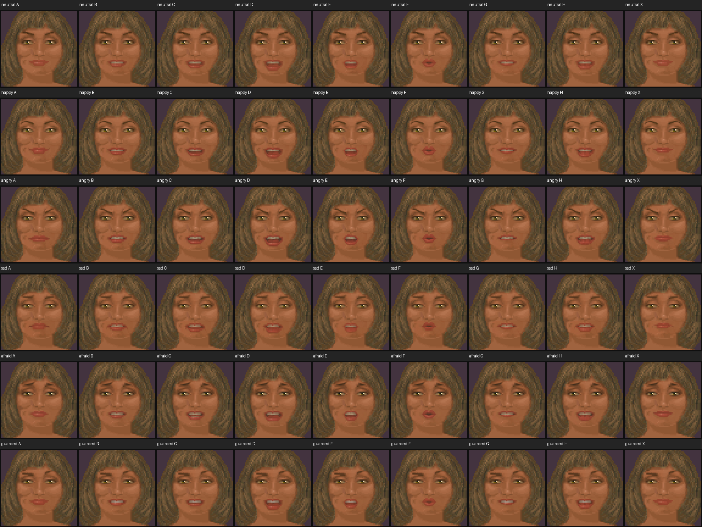
Dateien und Prüfdaten Rennen · Narr · acht Perspektiven 32 Rennphasen ergänzen 32 Gehphasen für drei identische Originalquellen. Kontaktseite statisch geprüft; Gesicht, Propgröße und Palette variieren.
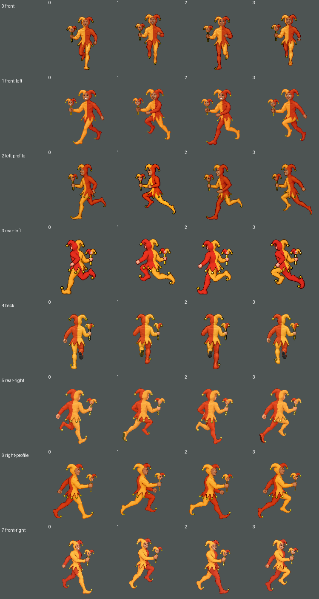
Dateien und Prüfdaten Gehen · Narr · acht Perspektiven 32 Phasen für drei identische Originalquellen. Rot/goldene Asymmetrie und Marotte in rechter Hand bleiben erhalten; Gesicht, Requisitengröße und Palette variieren.
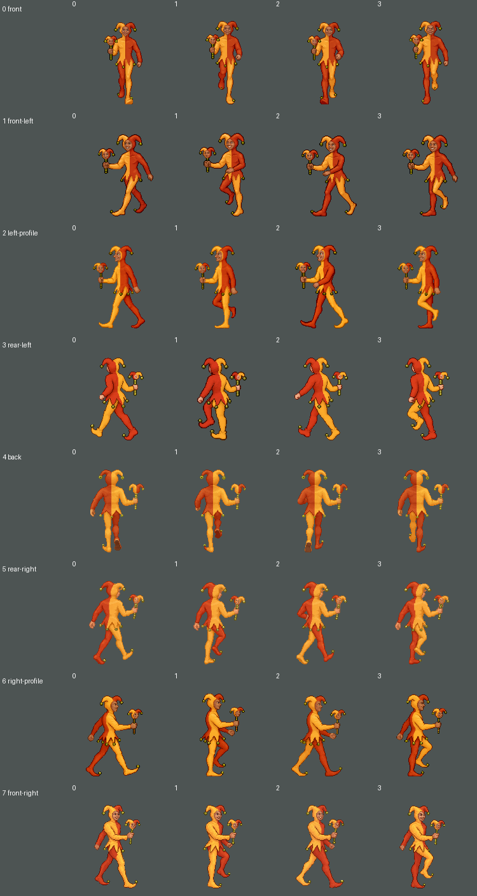
Dateien und Prüfdaten Portrait 197 · vollständiger Kandidat 54 eigene Augen- und 54 Mundteile. E gezielt gerundet; G/FV-Kontakt sowie ähnliche Sad/Fear-Ausdrücke bleiben Grenzen.
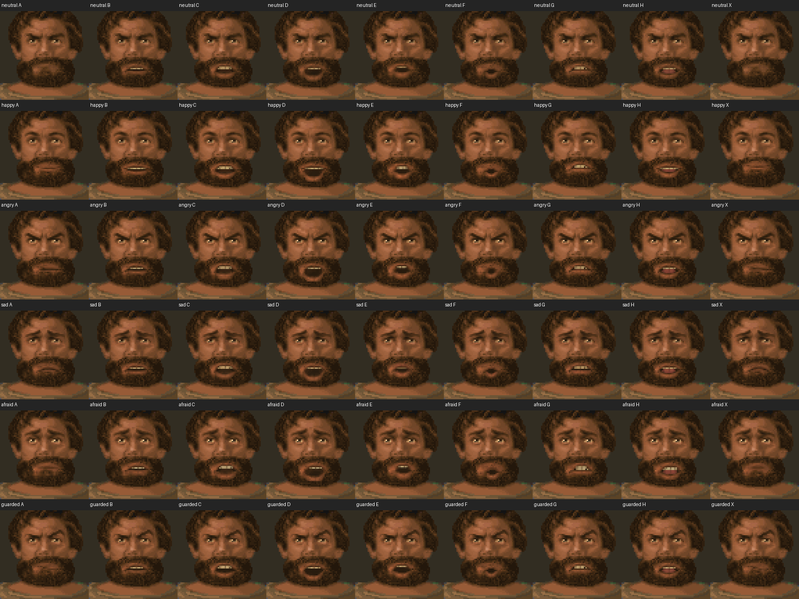
Dateien und Prüfdaten Portrait 196 · 54 Mundvarianten 108 Augen-/Mundteile vorhanden. G liest sich teilweise wie zusammengebissene Zähne; F/V-Lippenkontakt bleibt begrenzt. Keine pauschale Phonemfreigabe.
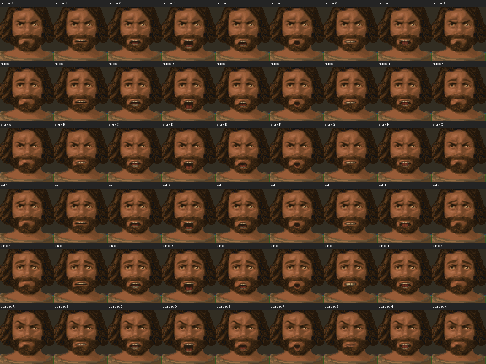
Dateien und Prüfdaten Portrait 452 · exakt übernommene Augen 108 Teile aus passenden vorhandenen Merkmalen abgeleitet. Eigene Haare und Hintergrund bleiben pixelgenau erhalten. Keine neu generierten Posen; Qualitätsgrenzen des Donors bleiben.
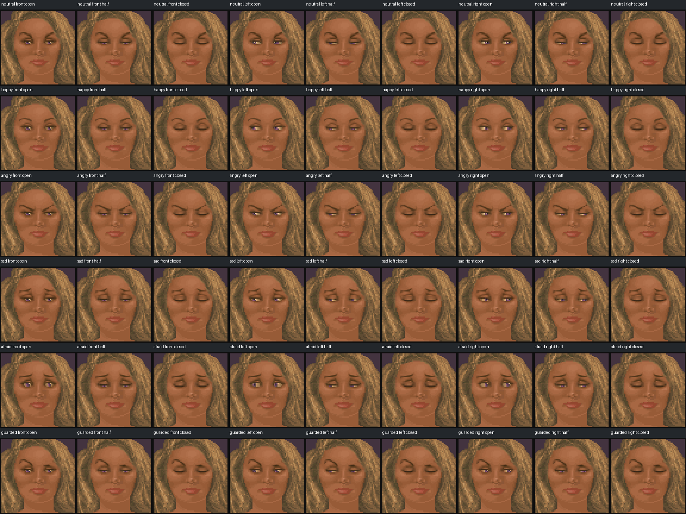
Dateien und Prüfdaten Rennen · 386 · acht Perspektiven 20 erzeugte Posen plus zwölf native Spiegelableitungen. Gesicht, Schulterdetails und Helligkeit weichen ab; Kandidat.
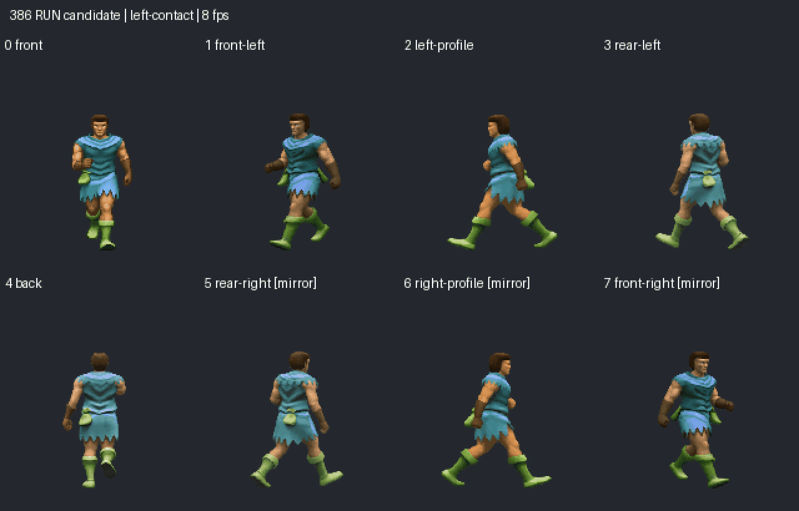
Dateien und Prüfdaten Rennen · stationär 182/0 · acht Perspektiven 32 ausgewählte Phasen. Rückseite links auf gemeinsame Kamera korrigiert; Körperhöhe, Taschen und Farbe variieren weiterhin.
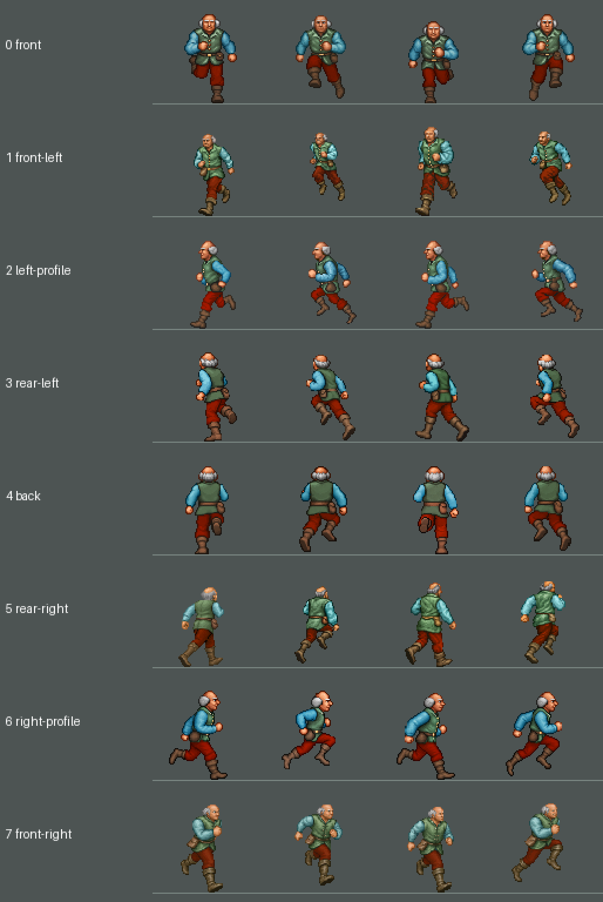
Dateien und Prüfdaten Klettern · 381 · acht Perspektiven 32 Reach/Pull/Tuck/Push-Phasen. Front-rechts-Kamera und frontale Push-Handphase korrigiert. Verdeckte Gliedmaßen und genaue Wandkontakte bleiben Prüflücken.
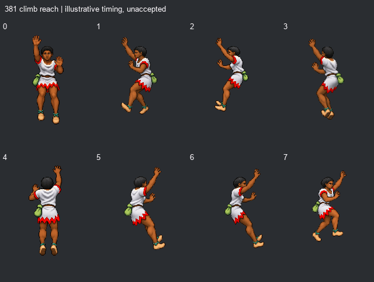
Dateien und Prüfdaten Rennen · 381 · acht Perspektiven 20 erzeugte Posen plus zwölf ausdrücklich gekennzeichnete Spiegelableitungen nach nativem Renderer. Stoff-/Körpervariation bleibt. Kein pauschaler Qualitäts-PASS.
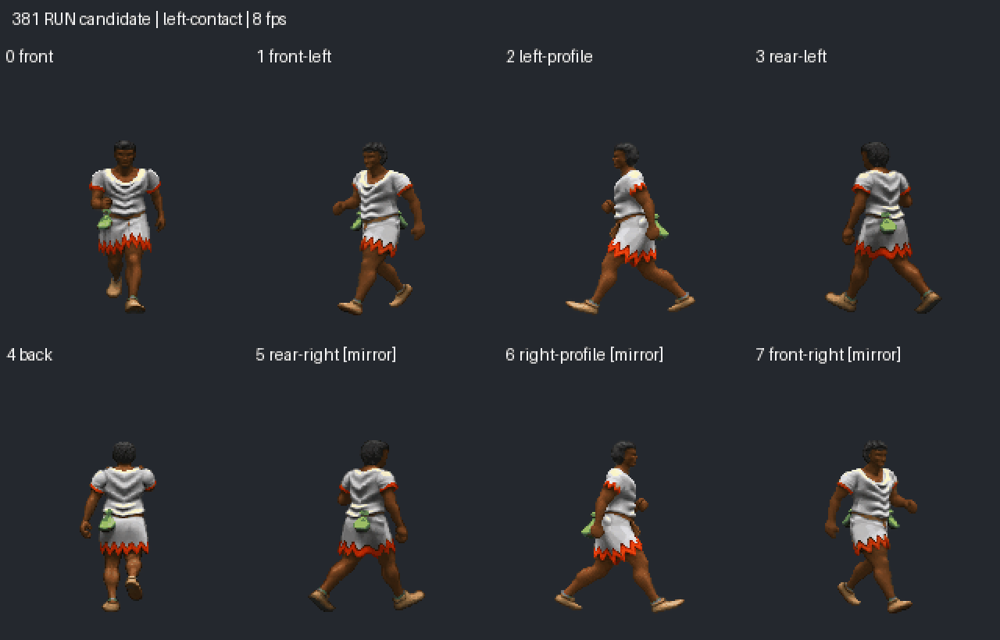
Dateien und Prüfdaten Schwimmen · 381 · acht Perspektiven 32 Frames; Front und Rückseite neu mit niedrigerer Kameraprojektion. Unterschiede zwischen Viertelansichten bleiben Kandidatengrenzen.
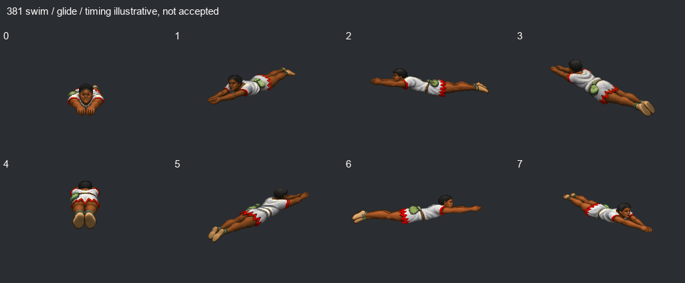
Dateien und Prüfdaten Portrait 195 · 54 Mundvarianten 54 Augen- und 54 Mundframes bilden den vollständigen Kunstkandidaten. C/E sind teilweise schwach unterscheidbar; keine pauschale Phonem- oder zeitliche Freigabe.
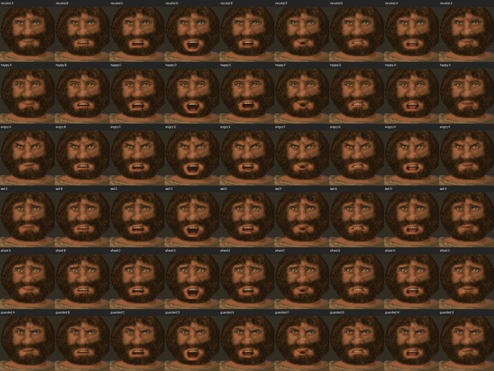
Dateien und Prüfdaten Stehen · 182/9 · acht Perspektiven Blonde Figur mit grauem Kleid und goldenem Schal. Originalfront erhalten; frühere falsche Kapuzenfassung ausdrücklich verworfen. Identische Quelle 357/2 verwendet denselben Kandidaten.
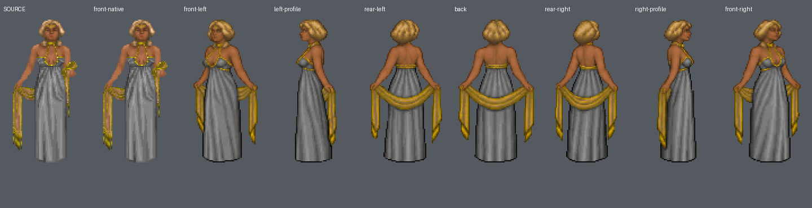
Dateien und Prüfdaten Stehen · 182/54 · acht Perspektiven Kapuzenfigur; Originalfront erhalten. Quellidentisch mit 182/55. Neue Seitenansichten glatter als das Original.
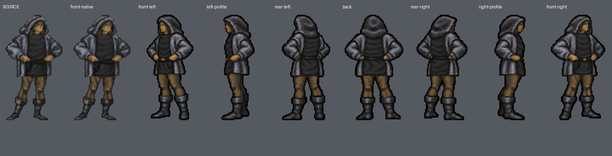
Dateien und Prüfdaten Nahkampf · 382 · Perspektiven 0–3 Weitere 32 sourcegebundene Phasen in acht Ansichten. Rückseite links begrenzt prüfbar durch verdeckten Griff.
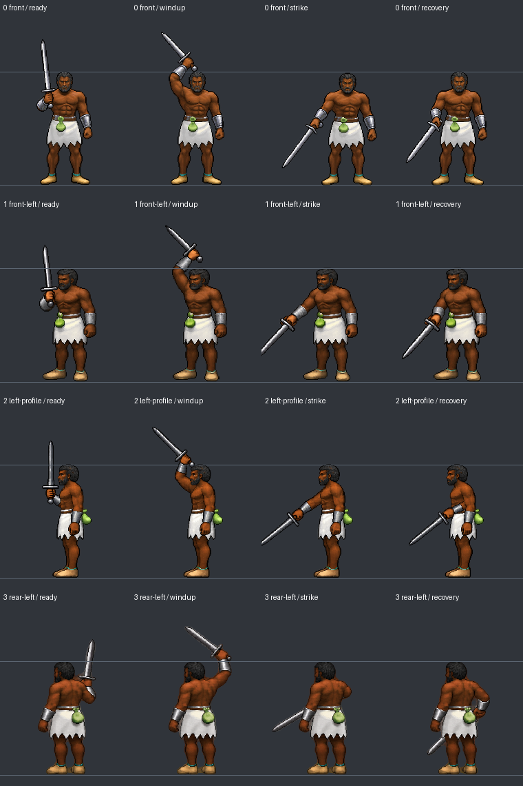
Dateien und Prüfdaten Rennen · 385 · acht Perspektiven 32 verschiedene Kontakt-/Flugframes. Beide Kontaktseiten geprüft; Farb- und Detailabweichungen bleiben. Weltmaßstab separat dokumentiert.
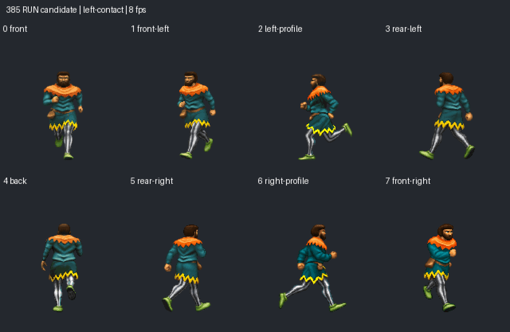
Dateien und Prüfdaten Nahkampf · 381 · Perspektiven 0–3 Neue Identität mit weißer Tunika. Rückseite links: Waffenarm teilweise verdeckt; keine vollständige Anatomiefreigabe.
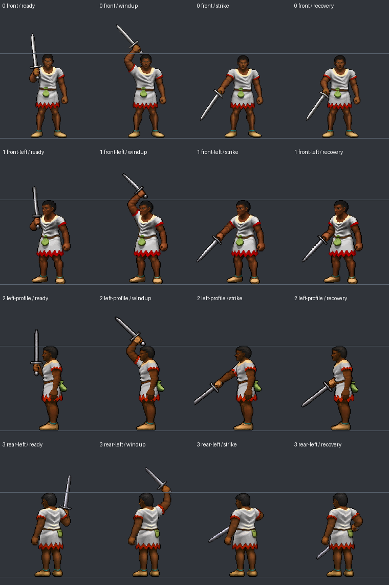
Dateien und Prüfdaten Nahkampf · 381 · Perspektiven 4–7 32 Frames dieses Kandidaten. Frühere Beutelentfernung korrigiert: echte native Gehrückseiten zeigen den grünen Beutel; erzeugte Idle-Bilder waren dafür keine Originalquelle.
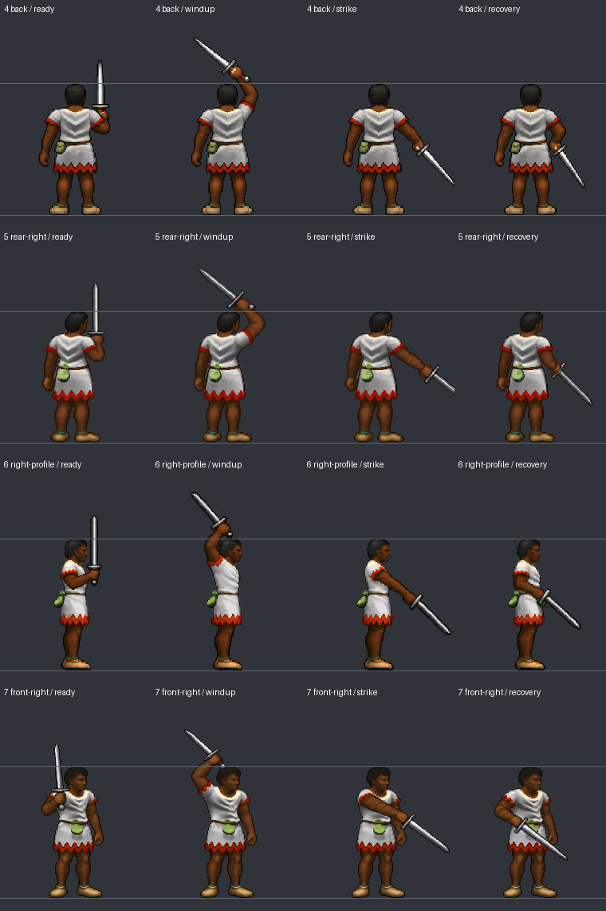
Dateien und Prüfdaten Schwimmen · 381 · früherer Profilpilot Vier Phasen mit korrigierter Körperlänge. Der aktuelle Achtansichten-Kandidat ist oben verlinkt.
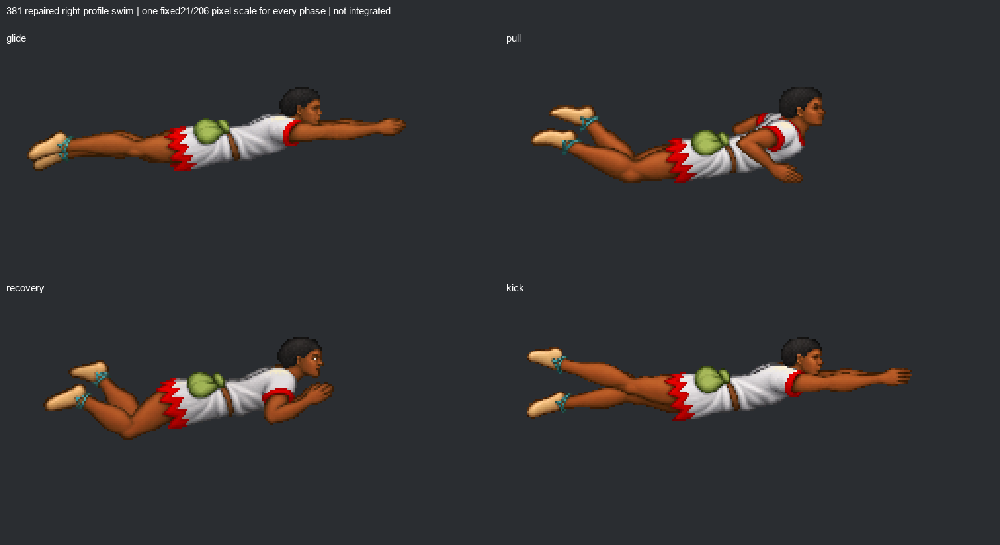
Dateien und Prüfdaten Portrait 195 · 54 Augenvarianten Sechs Stimmungen × drei Blickrichtungen × drei Lidstände. Guarded-HALF wirkt asymmetrisch; zeitlicher Übergang offen. Alle 54 Mundvarianten liegen ebenfalls vor.
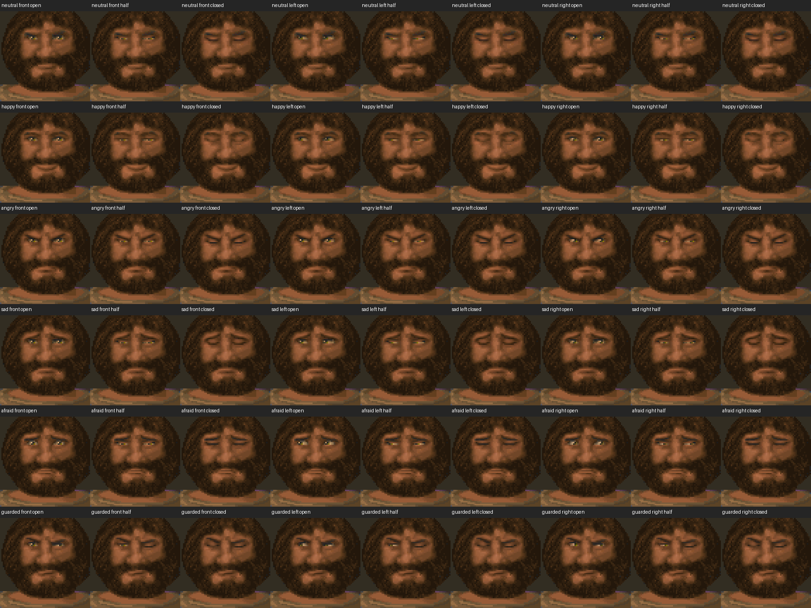
Dateien und Prüfdaten Nahkampf · 385 · Perspektiven 0–3 Vier Phasen in jeder Ansicht. Rückseite links: Waffenarm teilweise verdeckt; Strike/Recovery bleiben in der Sichtprüfung offen.
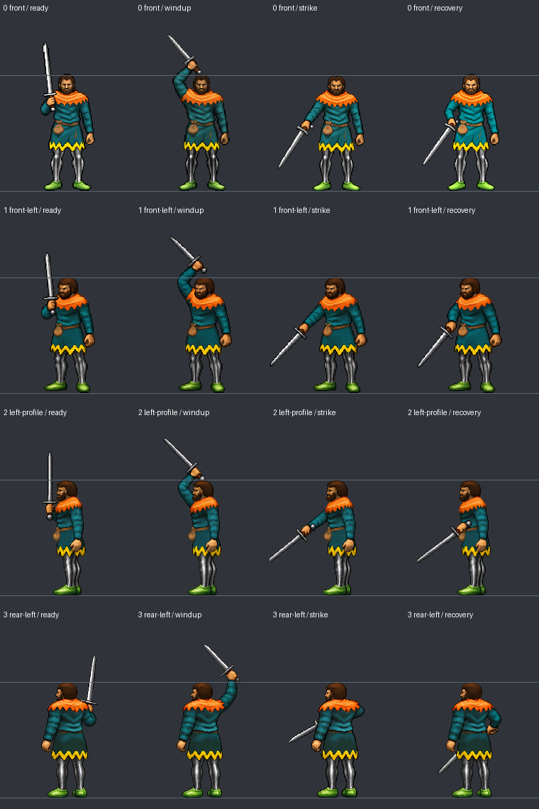
Dateien und Prüfdaten Nahkampf · 385 · Perspektiven 4–7 Weitere vier Ansichten desselben 32-Frame-Kandidaten. Keine Nutzerabnahme oder Runtime-Integration.
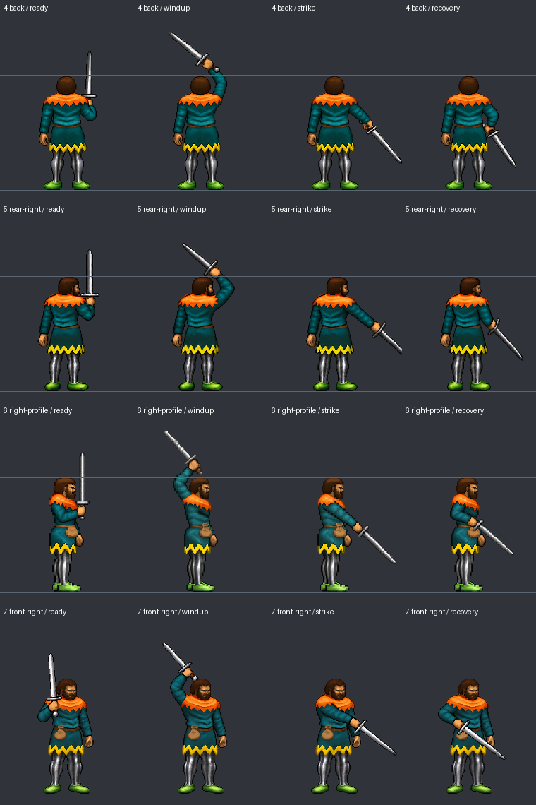
Dateien und Prüfdaten Springen · 381 · acht Perspektiven 32 Frames vorhanden. Größen, Farbgebung und Beutelposition unterscheiden sich teilweise zwischen Ansichten. Kandidat, nicht integriert.
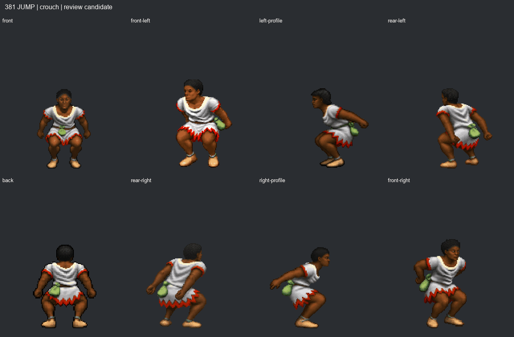
Dateien und Prüfdaten Gehen · 182/0 · linkes Profil Vier einzeln erzeugte Phasen. Native Körperhöhe 76–77 px; kräftigerer Hosenfarbton bleibt sichtbar.
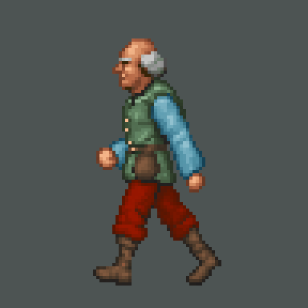
Dateien und Prüfdaten Rennen · 385 · linkes Profil Vier Kontakt-/Flugphasen mit Armwechsel. Farb- und Faltenabweichungen bleiben; vollständiger Achtansichten-Kandidat oben.
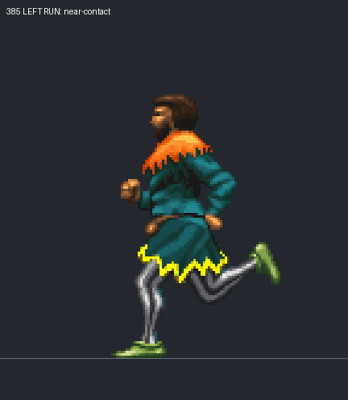
Dateien und Prüfdaten Nahkampf · 385 · früherer Profilpilot Ready, Windup, Strike und Recovery mit gleicher Waffenhand. Der vollständige Achtansichten-Kandidat ist oben verlinkt.
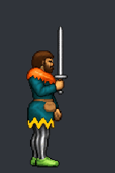
Dateien und Prüfdaten Nahkampf · 385 · frontal Vier frontal erzeugte Phasen. Dies ist ein Standbildvergleich, kein Nachweis spielinterner Animation.
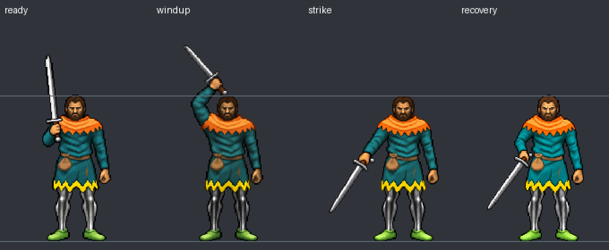
Dateien und Prüfdaten Stehen · DET 10015/0 · acht Perspektiven Originalfront erhalten. Neue Seitenansichten sind kräftiger und weicher gezeichnet; Augen-/Brillendetails noch nicht identisch.
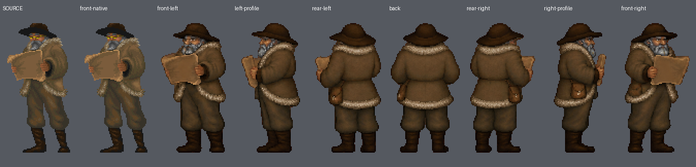
Dateien und Prüfdaten Schlafbilder · DET-Gelehrte Fünf neue Kandidaten mit geschlossenen Augen, grüner Decke und weißem Kissen. Weitere DET-Batches werden separat geprüft.
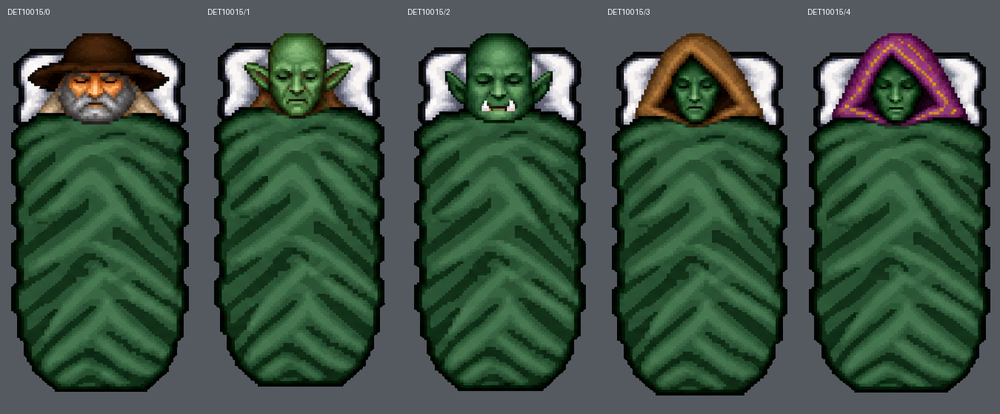
Dateien und Prüfdaten Portrait 195 · Emotionsmaster Neutral bleibt Original. Fünf erzeugte Ausdrücke; die daraus entstandenen 108 Augen-/Mundteile sind oben verlinkt.
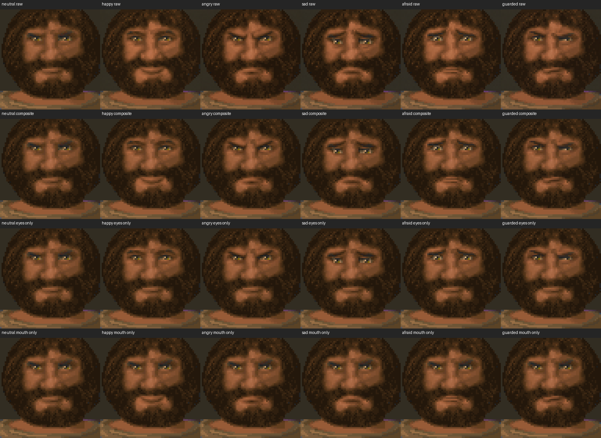
Dateien und Prüfdaten Portrait 195 · neutrales Zwischenlid Einzelbild-Pilot mit sichtbarer Zwischenöffnung. Kein allgemeiner Portrait-PASS.
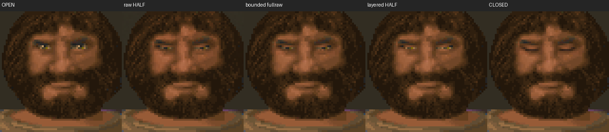
Dateien und Prüfdaten Alle exakt abgeleiteten Portrait-Teile: eigene Originale bleiben erhalten Dies sind überwiegend nur Mundsets oder nur Augensets. Technische Pixelprüfung bestanden; die zweite Serie wartet auf vollständige visuelle Prüfung. Vorlagenqualität und fehlende andere Gesichtshälfte bleiben offen. Kein neuer AI-Posenbestand.
common-445 · 54 Teile · mouths: alle 54 Zustände Herkunft/Prüfdaten
common-452 · 108 Teile · eyes: alle 54 Zustände mouths: alle 54 Zustände Herkunft/Prüfdaten
common-434 · 54 Teile · mouths: alle 54 Zustände Herkunft/Prüfdaten
common-046 · 54 Teile · mouths: alle 54 Zustände Herkunft/Prüfdaten
common-066 · 54 Teile · mouths: alle 54 Zustände Herkunft/Prüfdaten
common-067 · 54 Teile · mouths: alle 54 Zustände Herkunft/Prüfdaten
common-425 · 54 Teile · eyes: alle 54 Zustände Herkunft/Prüfdaten
common-012 · 54 Teile · mouths: alle 54 Zustände Herkunft/Prüfdaten
common-047 · 54 Teile · mouths: alle 54 Zustände Herkunft/Prüfdaten
common-068 · 54 Teile · mouths: alle 54 Zustände Herkunft/Prüfdaten
common-013 · 54 Teile · mouths: alle 54 Zustände Herkunft/Prüfdaten
common-069 · 54 Teile · mouths: alle 54 Zustände Herkunft/Prüfdaten
common-014 · 54 Teile · mouths: alle 54 Zustände Herkunft/Prüfdaten
common-070 · 54 Teile · mouths: alle 54 Zustände Herkunft/Prüfdaten
common-015 · 54 Teile · mouths: alle 54 Zustände Herkunft/Prüfdaten
common-071 · 54 Teile · mouths: alle 54 Zustände Herkunft/Prüfdaten
common-016 · 54 Teile · mouths: alle 54 Zustände Herkunft/Prüfdaten
common-017 · 54 Teile · mouths: alle 54 Zustände Herkunft/Prüfdaten
common-018 · 54 Teile · mouths: alle 54 Zustände Herkunft/Prüfdaten
common-020 · 54 Teile · mouths: alle 54 Zustände Herkunft/Prüfdaten
common-450 · 54 Teile · mouths: alle 54 Zustände Herkunft/Prüfdaten
common-096 · 54 Teile · mouths: alle 54 Zustände Herkunft/Prüfdaten
common-104 · 54 Teile · mouths: alle 54 Zustände Herkunft/Prüfdaten
common-128 · 54 Teile · mouths: alle 54 Zustände Herkunft/Prüfdaten
common-097 · 54 Teile · mouths: alle 54 Zustände Herkunft/Prüfdaten
common-098 · 54 Teile · mouths: alle 54 Zustände Herkunft/Prüfdaten
common-122 · 54 Teile · mouths: alle 54 Zustände Herkunft/Prüfdaten
common-395 · 54 Teile · mouths: alle 54 Zustände Herkunft/Prüfdaten
common-099 · 54 Teile · mouths: alle 54 Zustände Herkunft/Prüfdaten
common-107 · 54 Teile · mouths: alle 54 Zustände Herkunft/Prüfdaten
common-123 · 54 Teile · mouths: alle 54 Zustände Herkunft/Prüfdaten
common-131 · 54 Teile · mouths: alle 54 Zustände Herkunft/Prüfdaten
common-101 · 54 Teile · mouths: alle 54 Zustände Herkunft/Prüfdaten
common-125 · 54 Teile · mouths: alle 54 Zustände Herkunft/Prüfdaten
common-102 · 54 Teile · mouths: alle 54 Zustände Herkunft/Prüfdaten
common-126 · 54 Teile · mouths: alle 54 Zustände Herkunft/Prüfdaten
common-127 · 54 Teile · mouths: alle 54 Zustände Herkunft/Prüfdaten
common-105 · 54 Teile · mouths: alle 54 Zustände Herkunft/Prüfdaten
common-106 · 54 Teile · mouths: alle 54 Zustände Herkunft/Prüfdaten
common-130 · 54 Teile · mouths: alle 54 Zustände Herkunft/Prüfdaten
common-109 · 54 Teile · mouths: alle 54 Zustände Herkunft/Prüfdaten
common-133 · 54 Teile · mouths: alle 54 Zustände Herkunft/Prüfdaten
common-110 · 54 Teile · mouths: alle 54 Zustände Herkunft/Prüfdaten
common-134 · 54 Teile · mouths: alle 54 Zustände Herkunft/Prüfdaten
common-135 · 54 Teile · mouths: alle 54 Zustände Herkunft/Prüfdaten
common-139 · 54 Teile · mouths: alle 54 Zustände Herkunft/Prüfdaten
common-117 · 54 Teile · mouths: alle 54 Zustände Herkunft/Prüfdaten
common-141 · 54 Teile · mouths: alle 54 Zustände Herkunft/Prüfdaten
common-142 · 54 Teile · mouths: alle 54 Zustände Herkunft/Prüfdaten
common-389 · 54 Teile · mouths: alle 54 Zustände Herkunft/Prüfdaten
common-220 · 54 Teile · eyes: alle 54 Zustände Herkunft/Prüfdaten
common-236 · 54 Teile · mouths: alle 54 Zustände Herkunft/Prüfdaten
common-276 · 54 Teile · mouths: alle 54 Zustände Herkunft/Prüfdaten
common-285 · 54 Teile · mouths: alle 54 Zustände Herkunft/Prüfdaten
common-300 · 54 Teile · mouths: alle 54 Zustände Herkunft/Prüfdaten
common-308 · 54 Teile · mouths: alle 54 Zustände Herkunft/Prüfdaten
Alle neuen DET-Schlafkandidaten prüfen 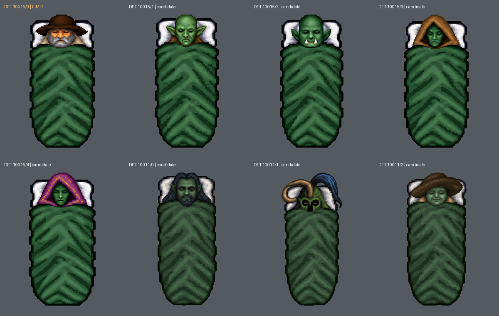
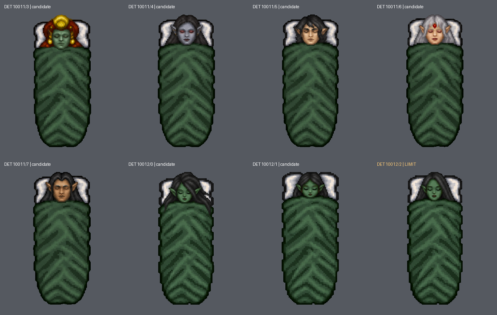
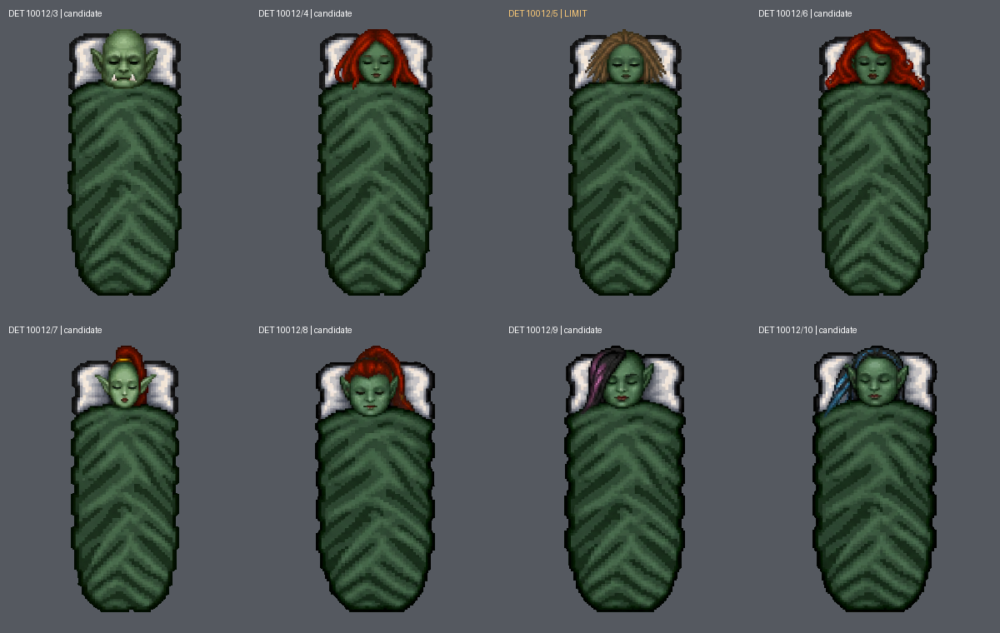
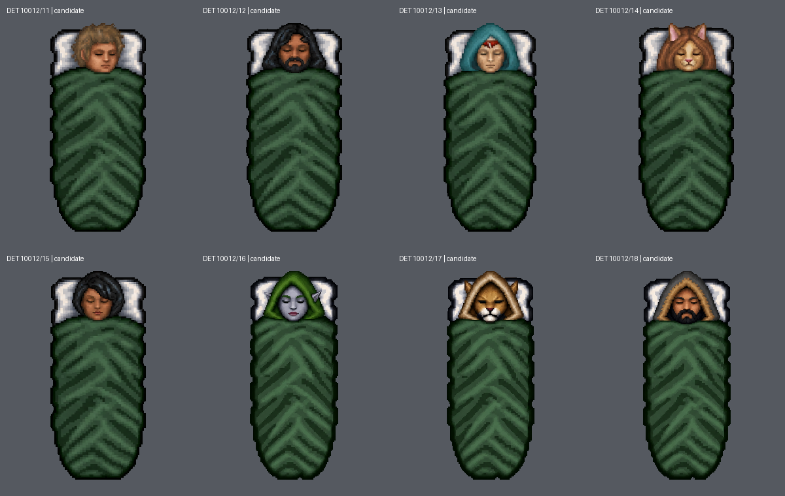
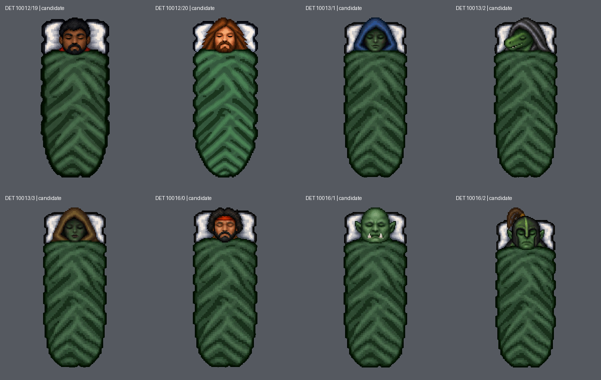
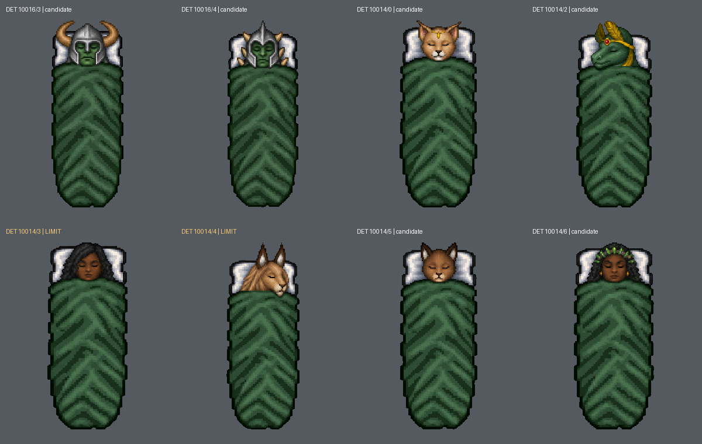
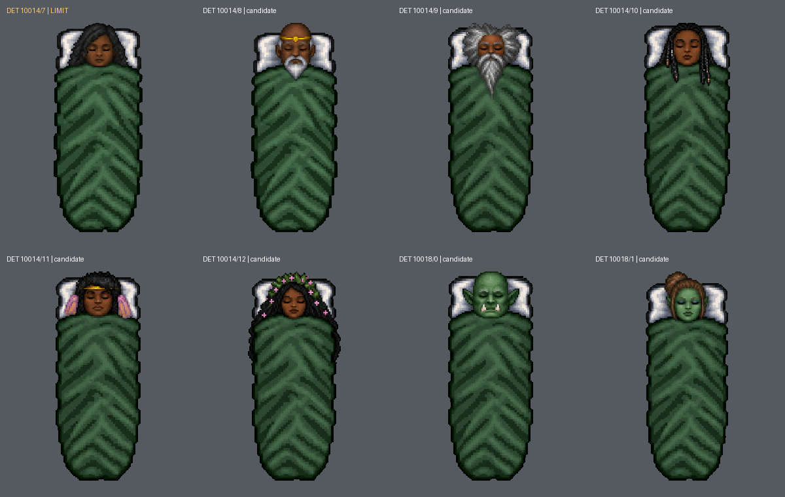
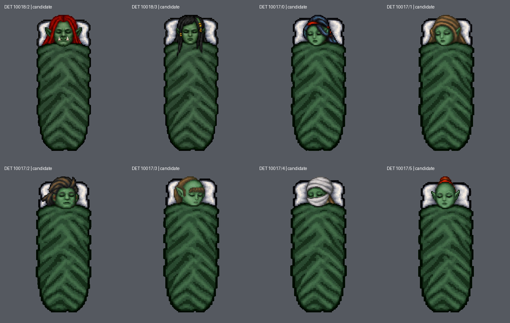
Ein Bogen-Nock-Frame wurde von der Bildgenerierung mit moderation_blocked zurückgewiesen. Das vorhandene Draw-/Release-Paar schließt diese Lücke nicht. Portrait 152 bleibt wegen frontal fast offener HALF-Augen ungeklärt.